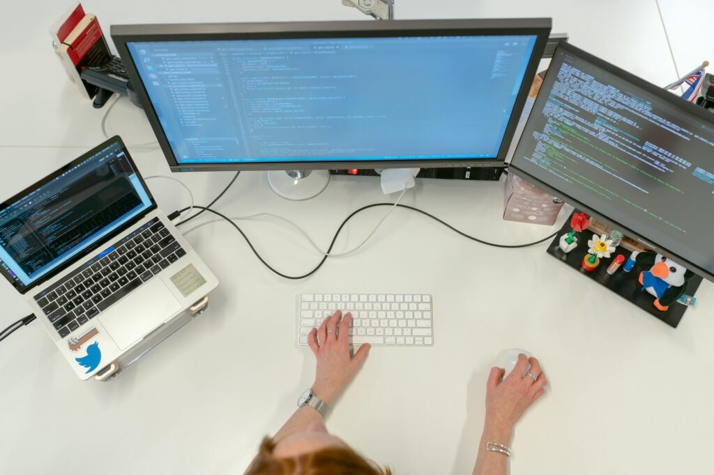
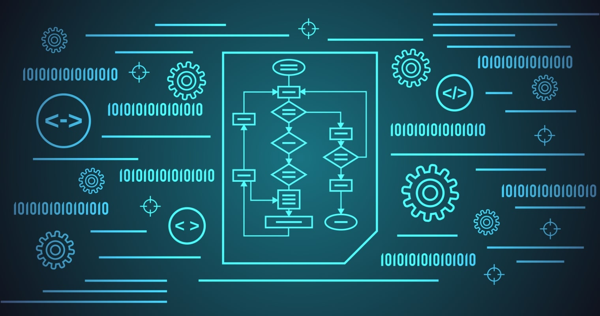

Abstrak
Informatika telah menjadi sorotan dalam satu dekade terakhir, memunculkan ketertarikan besar di kalangan mahasiswa dan calon profesional. Dalam era yang semakin didominasi oleh teknologi dan informasi, Jurusan Informatika telah berkembang menjadi salah satu jurusan paling diminati, bersaing ketat dengan jurusan lain seperti kedokteran dan kesehatan. Keberhasilan ini tidak lepas dari kenyataan bahwa dunia saat ini sangat bergantung pada teknologi dan semakin pesatnya perkembangan teknologi informasi.
Mengapa Informatika menjadi begitu populer? Jawabannya sederhana: kebutuhan akan tenaga kerja di bidang IT semakin meningkat. Pada kuartal pertama tahun 2022 (Januari-Maret), melansir dari blog
Linkedin.com
, ditemukan fakta menarik bahwa dari 10 pekerjaan dengan tingkat kebutuhan tertinggi di dunia, setengah dari daftar tersebut adalah pekerjaan yang berhubungan dengan IT. Ini termasuk posisi seperti Software Engineer, JavaScript Developer, Java Software Engineer, DevOps Engineer, dan Full-Stack Engineer.
Ketertarikan besar ini tidak hanya didorong oleh permintaan pasar yang tinggi, tetapi juga oleh peluang karir yang tak terbatas di dunia Informatika. Jurusan ini membuka pintu menuju berbagai bidang, termasuk pengembangan perangkat lunak, keamanan siber, analisis data, kecerdasan buatan (AI), dan banyak lagi.
Mari kita eksplorasi bersama dunia yang tak terbatas dalam teknologi informasi dan lihat bagaimana Anda dapat menjadi bagian dari masa depan yang terus berkembang ini. Yuk, mari masuk ke dunia Informatika!
Apa itu Jurusan Informatika?

Jurusan Informatika adalah salah satu cabang ilmu di bidang teknologi informasi yang mempelajari pengolahan data, pengembangan perangkat lunak, komputasi, dan segala hal yang berkaitan dengan komputer dan sistem informasi. Jurusan ini mempersiapkan mahasiswa untuk menjadi ahli dalam memecahkan masalah dengan menggunakan teknologi informasi, serta mengembangkan dan mengelola sistem informasi yang efisien.
Sejarah Jurusan Informatika dapat ditelusuri ke awal perkembangan komputer. Pada awalnya, komputer digunakan untuk menghitung data statistik dan pekerjaan matematika lainnya. Namun, dengan makin kompleksnya tuntutan teknologi, muncullah kebutuhan akan ilmuwan komputer yang terlatih untuk mengembangkan perangkat keras dan perangkat lunak yang lebih canggih. Perkembangan komputer selama Perang Dunia II memberikan dorongan besar untuk pengembangan ilmu komputer. Saat itulah komputer pertama kali digunakan dalam konteks yang mirip dengan yang kita kenal saat ini. Dan sejak itu, Jurusan Informatika mulai berkembang sebagai cabang ilmu tersendiri di perguruan tinggi.
Terdapat beberapa alasan mengapa memilih Jurusan Informatika dapat menjadi pilihan yang sangat baik. Pertama, jurusan ini menawarkan peminatan yang sangat luas, memungkinkan mahasiswa untuk memilih spesialisasi sesuai dengan minat mereka, mulai dari pengembangan perangkat lunak hingga keamanan siber. Selain itu, peluang karir yang luas juga menjadi daya tarik utama. Semakin berkembangnya teknologi informasi membuat permintaan akan profesional IT terus meningkat, memberikan lulusan Informatika akses ke berbagai industri dengan gaji yang kompetitif.
Selain itu, memilih Jurusan Informatika memberikan kesempatan untuk berkontribusi pada kemajuan teknologi. Lulusan Jurusan Informatika dapat menciptakan perangkat lunak, aplikasi, dan solusi inovatif yang dapat mengubah dunia. Selain itu, jurusan ini melatih keterampilan pemecahan masalah yang sangat berharga, memungkinkan mahasiswa untuk memecahkan masalah kompleks dengan pendekatan logis dan kreatif. Dengan memilih Jurusan Informatika, seseorang dapat memasuki dunia yang semakin terhubung dan tergantung pada teknologi informasi, dan menjadi bagian dari perubahan yang terus berlanjut di era digital ini.
Berikut kampus yang ada Jurusan Informatika nya (urutan tidak menyatakan kualitas kampusnya)
- Institut Teknologi Bandung (Teknik Informatika - STEI)
- Universitas Gadjah Mada (Ilmu Komputer)
- Universitas Indonesia (Ilmu Komputer)
- Institut Teknologi Sepuluh Nopember (Teknik Informatika)
- Bina Nusantara University (Teknik Informatika)
- Telkom University (Informatika)
- Universitas Gunadarma (Teknik Informatika)
- Universitas Hasanudin (Teknik Informatika)
- Universitas Negeri Sebelas Maret (Informatika)
- Universitas Tanjungpura (Informatika)
Apa yang dipelajari di Informatika?

Jurusan Informatika merupakan program studi yang memberikan pemahaman mendalam tentang teknologi informasi. Di dalamnya, mahasiswa mempelajari hal-hal berikut:
- Pemrograman
- Algoritma dan Struktur Data
- Sistem Operasi
- Rekayasa Perangkat Lunak
- Jaringan Komputer
- Sistem Informasi
- Kecerdasan Buatan (AI)
- Sistem Tertanam (Embedded System)
- Basis Data
- Keamanan Siber
Pekerjaan lulusan Informatika

Lulusan Jurusan Informatika memiliki akses ke berbagai peluang karir di dunia teknologi informasi dan lebih banyak lagi. Berikut adalah beberapa pekerjaan yang dapat diambil oleh mereka:
Berikut pekerjaan lulusan Informatika nya
- Software Engineer
- System Analyst
- Data Scientist
- Game Developer
- IT Konsultan
- Cybersecurity
- Network Security
Kesimpulan
Tiba saatnya bagi para calon mahasiswa tahun 2023 untuk merencanakan masa depan mereka dengan bijak. Memilih jurusan yang tepat adalah langkah penting dalam perjalanan akademik Anda. Jurusan Informatika adalah salah satu opsi yang menarik dengan peluang karir yang luas, namun juga persaingan yang ketat. Keputusan ini dapat menjadi motivasi untuk terus mengembangkan diri dan berusaha keras mencapai tujuan. Bagi yang telah berhasil mendapatkan kursi di perguruan tinggi impian, selamat! Perjalanan panjang menuju kesuksesan akademik telah dimulai, dan persiapkan diri untuk menghadapi berbagai tantangan yang akan datang selama masa perkuliahan. Tetap semangat dan fokus untuk mencapai impian dan tujuan akademik Anda.